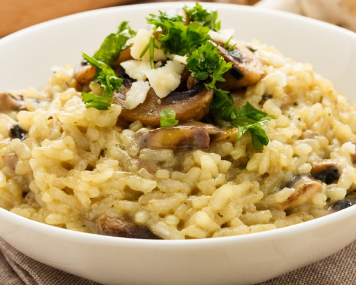

2. Pizza
The italien pizza. Often imitated, never equalled.
Dough, tomato sauce and cheese.That's what it took for this nation to
create one of the most widespread meals this earth
has ever known. You'll find a complete recipe of this classic meal
here
.

3. Risotto
Risotto is one of the most typical dishes of Italian cuisine.
Whether it is accompanied by mushrooms, seafood, vegetables,
chorizo and parmesan, risotto is a simple dish to make as long
as certain rules are respected, such as the choice of rice and
the cooking stock. Let's put it into practice : I suggest you a
recipe to follow
here
.
